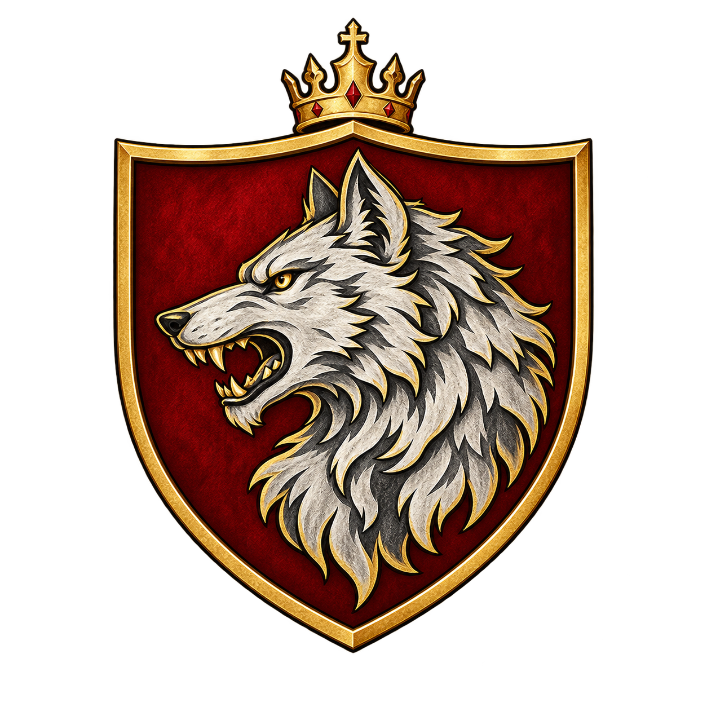
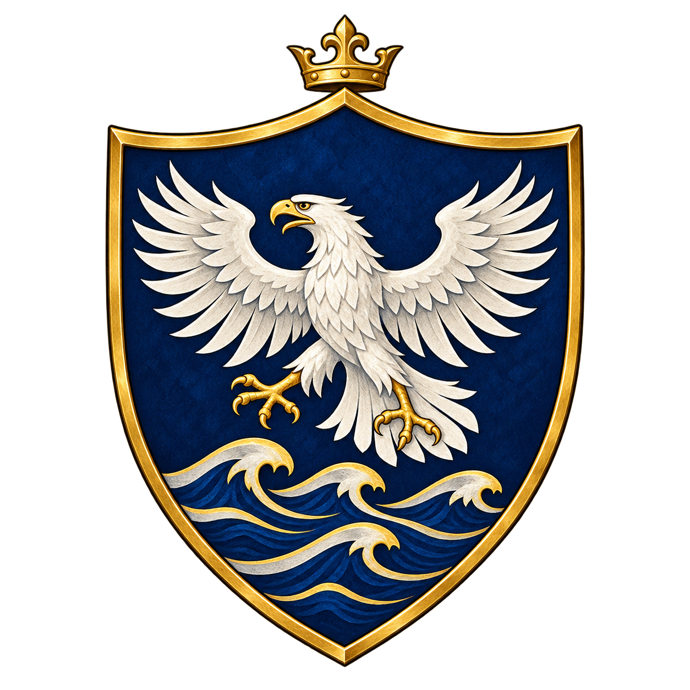

1
Identity awaiting numeric confirmationFull-size original uploaded PNG; no subject assigned

327D88CA-D496-4379-BFE6-F7C3344D9C27.pngOpen original ↗Four user-approved simplified heraldic shields, shown in exact GitHub upload-file order, with independent number labels. These are seals derived from existing full heraldic achievements, not replacements for the full formal arms.
327D88CA-D496-4379-BFE6-F7C3344D9C27.pngOpen original ↗
37B0202E-7CF9-4798-95B3-988FC1E279EC.pngOpen original ↗
4D5E00E4-BBFA-48AE-A326-63E3EA781D71.pngOpen original ↗
ADA756D0-67B1-4F7B-B3AE-35AD19316C75.pngOpen original ↗Falkenrath 1, Volkov 3, Veyrholm 4 — this is an example format only, not an asserted mapping. The previous full heraldry, House pages and archived revisions are being preserved.